Pasa lista en segundos, sin internet y sin servidor
El estudiante marca asistencia acercando su celular al del docente por Bluetooth de baja energía. Sin registros lentos, sin servidores y sin depender del wifi del salón.
Cómo funciona
Sin emparejamiento previo, sin conexiones continuas y sin consumir datos móviles.
Vinculación el primer día de clase
Antes de iniciar las clases, cada estudiante vincula su teléfono con el del docente mediante un escaneo óptico e intercambio criptográfico.
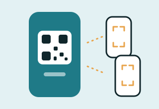
Proyectar QR del curso
El docente proyecta en pantalla el código QR que contiene el identificador de la clase y su clave pública X25519.
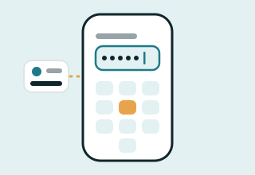
Escanear e ingresar código
El estudiante escanea el código con su cámara, digita su código estudiantil y emite una solicitud BLE con su clave X25519 efímera.
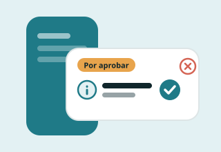
Revisar y asignar casilla
El docente confirma la identidad del estudiante y le asigna una casilla (0–63). Ambos derivan un secreto local compartido con HKDF-SHA256.
Toma de asistencia en segundos
Durante cada clase regular, el proceso toma solo unos segundos y confirma la asistencia de inmediato.
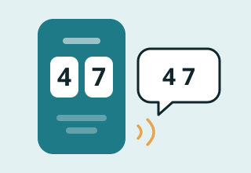
Iniciar y dictar PIN
El docente inicia la sesión en su aplicación y dicta un PIN verbal efímero de 2 dígitos a los estudiantes presentes.
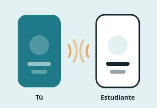
Digitar PIN y acercar celular
El estudiante digita el PIN y acerca su celular. Emite un paquete BLE con una etiqueta HMAC-SHA256 que rota cada 30 segundos.
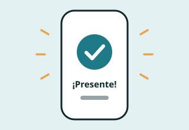
Detección y eco instantáneo
El docente recibe la señal por proximidad (umbral −75 dBm) y emite un eco de mapa de bits cada 1 s. El estudiante ve «¡Presente!» al instante.
Lista invertida de excepción: ¿Un estudiante no trajo celular o se quedó sin batería? El docente lo marca presente con un solo toque en pantalla para asegurar cero exclusión.
Todo lo que necesitas para gestionar la asistencia
Diseñado para ser ágil, confiable y respetuoso con la privacidad de docentes y estudiantes.
Importación de listas
Importa listas de estudiantes directamente desde libros Excel (.xlsx) y archivos CSV, o pega datos en bloque desde el portapapeles.
Inscripción óptica QR
Enrolamiento sin cables con la cámara del celular, intercambio de claves X25519 y derivación HKDF-SHA256 vinculada a la clase.
Proximidad Bluetooth
Paquetes compactos de 16 bytes compatibles con BLE Legacy, sin emparejamiento previo ni consumo de datos móviles en el salón.
Lista invertida a un toque
Marca a mano inmediata para estudiantes sin teléfono móvil o con la batería agotada. Ningún estudiante queda excluido de la clase.
Acta y Excel de 4 hojas
Generación oficial de libros Excel (.xlsx) estructurados en Resumen, Detalle, Sesiones y Metadatos, con actas firmadas digitalmente.
Respaldo opcional en Google
Sincronización voluntaria y asíncrona a Google Sheets y Google Drive utilizando la cuenta de Google personal o institucional del docente.
Ayuda ilustrada paso a paso
13 escenas vectoriales explicativas, recorrido interactivo en la primera apertura y centro de ayuda temático contextual integrado.
Sin internet en clase
Operación 100 % autónoma con persistencia local en SQLite (esquema v4). Nada depende de la red inalámbrica de la universidad.
Ingeniería detrás de cada paquete de radio
Protocolo de proximidad ligero y criptografía estándar diseñada para el estándar Bluetooth Low Energy.
HMAC-SHA256 rotativo
Etiqueta de autenticación de presencia que cambia cada 30 segundos para evitar ataques de retransmisión o suplantación remota.
Paquetes de 16 bytes
Estructura ultracompacta compatible con BLE Legacy, respetando holgadamente el límite de anuncio de 31 bytes.
Eco de 64 posiciones
El teléfono del docente emite un anuncio cada 1 segundo con un mapa de bits de 8 bytes para confirmar a toda la clase.
Umbral RSSI de −75 dBm
Verificación física calibrada a corta distancia (−75 dBm en clase y −95 dBm para el enrolamiento inicial).
X25519 y HKDF-SHA256
Intercambio de claves en curva elíptica para derivar un secreto criptográfico exclusivo entre el alumno y el curso.
Hasta 64 estudiantes
Capacidad optimizada para grupos universitarios sin congestión del espectro ni consumo excesivo de batería.
Así se ve en un celular real
Diseñada para usarse con una sola mano, con contraste visual claro y modo oscuro completo.
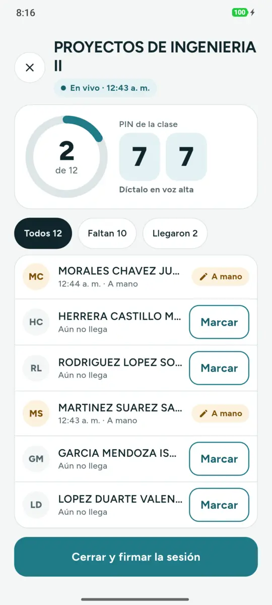
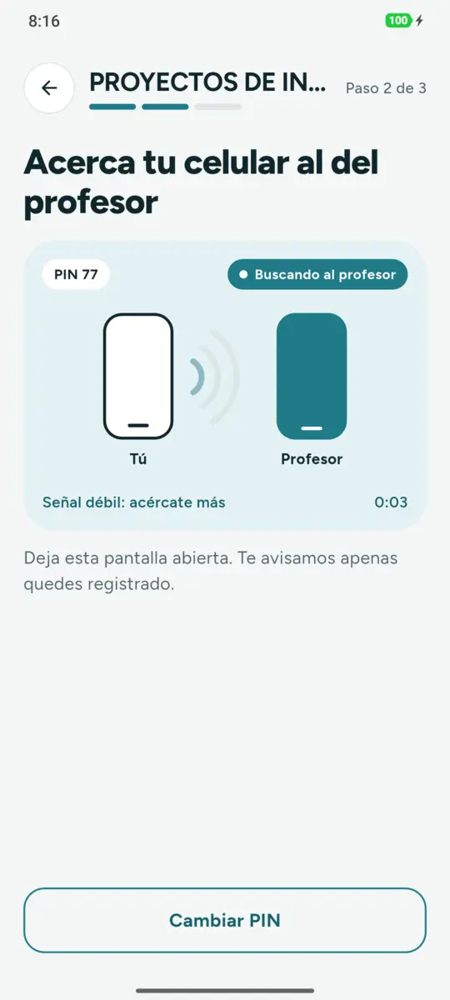
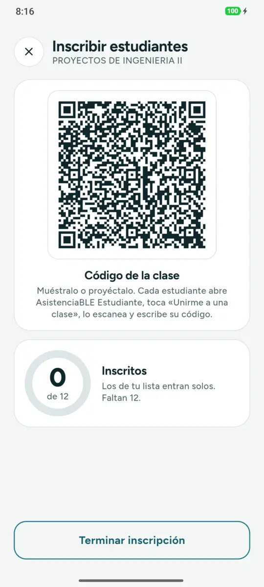
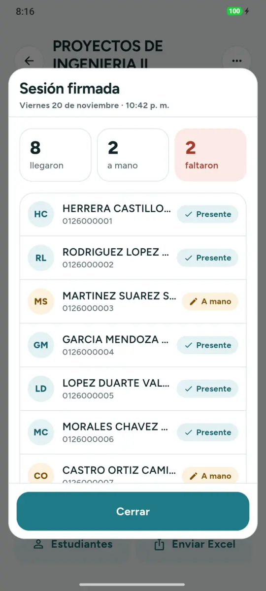
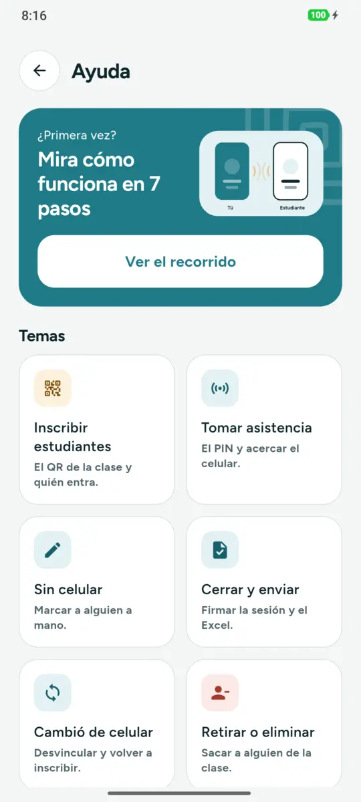
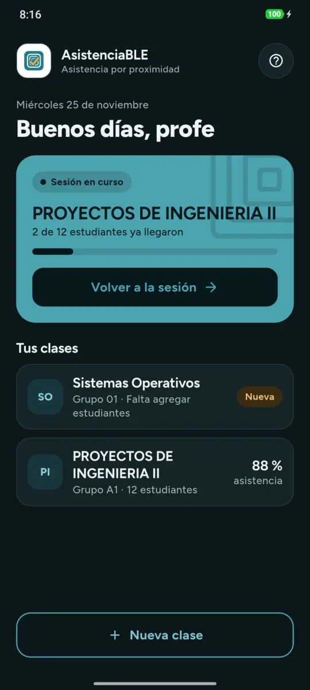
Tus datos se quedan en tu propio celular
Diseñada desde sus cimientos bajo el principio de minimización de datos y cero rastreo.
servidores centrales, cuentas en la nube forzadas ni intermediarios.
telemetría, bibliotecas de analítica comercial o rastreo en segundo plano.
local: almacenamiento exclusivo en la base de datos local SQLite del celular.
opcional: solo si el docente decide activar el respaldo en su Google Drive personal.
Transparencia en permisos de Android
BLUETOOTH_SCAN (neverForLocation)
Detecta los anuncios de asistencia en el salón sin acceder a la ubicación del usuario.
BLUETOOTH_ADVERTISE
Emite la baliza del estudiante o el eco con mapa de bits del docente.
BLUETOOTH_CONNECT
Permite la interacción con el adaptador Bluetooth local en Android 12+.
BLUETOOTH & BLUETOOTH_ADMIN
Operaciones de compatibilidad en Android 11 o inferior (maxSdkVersion 30).
ACCESS_FINE_LOCATION
Exigido en Android 11 o inferior por política del SO para escanear BLE. No activa GPS ni lee coordenadas.
CAMERA
Usado únicamente para el escaneo óptico del código QR de inscripción al curso.
INTERNET
Empleado exclusivamente si el docente decide activar la sincronización voluntaria con Google Sheets y Google Drive.
Diseñada teniendo en cuenta la Ley Estatutaria 1581 de 2012 de Colombia sobre protección de datos personales.
Proyecto académico y prueba piloto
AsistenciaBLE 1.0.0
Descarga directamente la APK para tu rol. Instálala en tu dispositivo Android y comienza a gestionar la asistencia de inmediato.
- Versión
- 1.0.0
- Publicada
- 25 nov 2026
- Tamaño
- ~35 MB · arm64
- Requiere
- Android 7.0+ (BLE Peripheral)
- Licencia
- Apache License 2.0
11:4F:E7:08:BD:60:DF:3E:1B:7A:D9:C0:E8:CE:D5:0E:2A:42:84:EE:C4:25:49:A7:26:6B:97:C3:AA:54:DE:5E